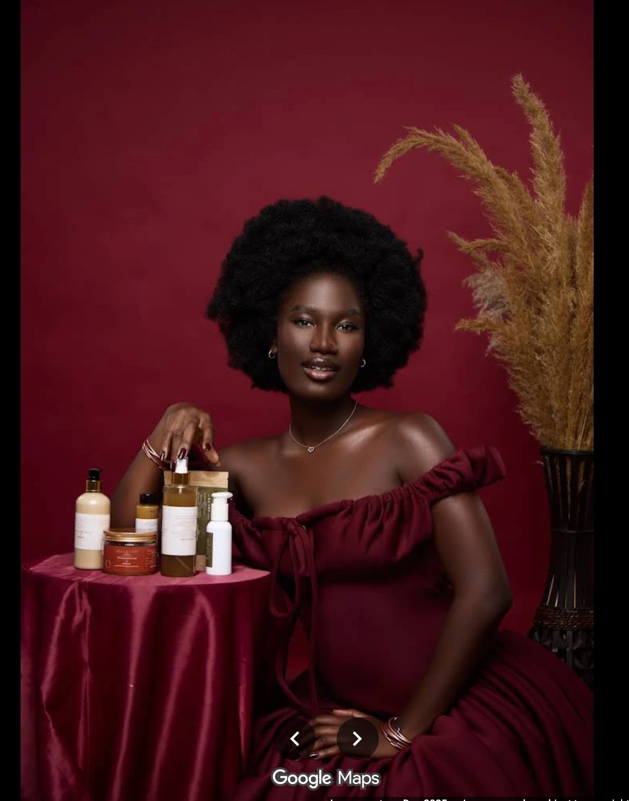

Le cuir chevelu d'abord, les longueurs ensuite. Et des soins nés de nos propres plantations, pressés à froid en Côte d'Ivoire.

Chez nous, tout est soin — du shampooing aux crèmes appliquées.
Nous sommes avant tout un centre capillaire : la santé du cuir chevelu passe avant celle des longueurs.
Nous sommes les cueilleurs et planteurs de nos matières premières, pressées à froid en Côte d'Ivoire puis transformées dans nos usines.
Nous ne parlons pas de porosité ni de 4C, 4A — mais de micro-boucles et de gros grains.
Nos propres plantations en Côte d'Ivoire.
Récoltées de nos propres mains.
Sans chaleur, pour préserver chaque matière.
Dans nos propres usines, un contrôle total sur la qualité.
Tout est soin.
La première étape : on observe, on écoute, on recommande.
DécouvrirGommage et massage pour un cuir chevelu assaini.
DécouvrirPour des boucles souples, nourries en profondeur.
DécouvrirUn soin pensé pour les micro-boucles, dans nos mots.
DécouvrirDans notre univers, nous ne parlons pas de porosité ni de 4C, 4A.
Des boucles fines et serrées, qui demandent douceur et hydratation régulière pour révéler leur définition.
Hydratation en profondeur, manipulation douce, et des soins qui respectent la fragilité de la boucle.
Des boucles plus larges et denses, qui gagnent en éclat avec des soins nourrissants et un bon scellage de l'hydratation.
Des soins riches, un démêlage attentif, et un entretien régulier du cuir chevelu.